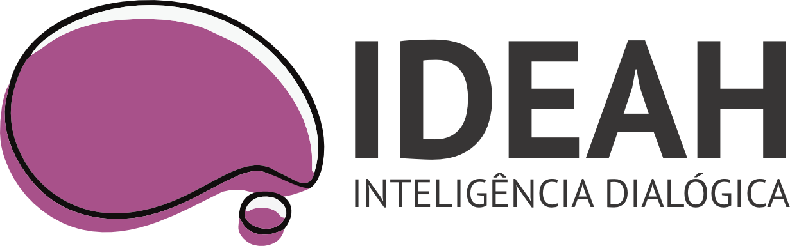

Um copiloto de raciocínio clínico que dialoga com sua abordagem — levantando perguntas, hipóteses abertas e recursos teóricos, sem diagnósticos nem rótulos.
Sem cartão de crédito · Cancele quando quiser
Começando pela psicologia corporal (Reich, Lowen, Método dos 5 Elementos). Psicanálise, Junguiana, TCC e outras a caminho.
Levante questões sobre seu caso, hipóteses e recursos clínicos — com citação quando pertinente.
Hipóteses abertas e próximos focos — não apenas relato. Um registro que acompanha o processo.
No app ou browser — histórico e registros de casos sempre à mão, de qualquer dispositivo.
O ideah não confirma vontades; ele ancora na teoria e pode contrapor pedidos que contrariem a abordagem, convidando à reflexão ética.
Apoio teórico para as primeiras sessões, sem diagnósticos antecipados — só perguntas, hipóteses e a teoria como parceira.
Dialogue com autores que você já conhece, aprofunde casos complexos e registre evoluções com rigor conceitual.
Uma base para orientar supervisionandos, preparar grupos de estudo e aprofundar a leitura paradigmática de cada caso.
Não é a IA "dizendo o que você quer ouvir". É a sua abordagem teórica respondendo em diálogo: perguntas, hipóteses abertas e referências. Quando não há respaldo textual, o ideah explicita a lacuna e propõe caminhos de estudo.
Convide Reich a observar couraças corporais e padrões somáticos no caso.
Pergunte a Freud sobre o trabalho de luto — sem rótulos antecipados.
Peça a Jung um olhar simbólico sobre um sonho recorrente.
Começando pela psicologia corporal · outras abordagens a caminho
Tudo que você precisa para pensar o caso e manter um registro clínico vivo.
Interlocução em profundidade com sua abordagem
Hipóteses abertas e próximos focos do caso
Respostas ancoradas em obras — com citação
Você controla o que registrar e exportar
No horizonte — em desenvolvimento
Gestão completa de casos
Agendamento integrado
Pagamento e recibos
Imagens e documentos
Construído por quem entende de clínica por dentro — não apenas de tecnologia.
Especialista em psicologia corporal e abordagem somática. A voz clínica que garante que o ideah fale a língua do terapeuta — não da tecnologia.
Diretora ClínicaResponsável pela visão do produto e pela experiência do terapeuta. Une estratégia, design e desenvolvimento para que o ideah seja simples onde importa.
Co-fundadorResponsável pela arquitetura técnica e pela integração de IA. Garante privacidade, citação precisa e que a base teórica do ideah seja segura e confiável.
Co-fundadorComo o ideah respeita a Res. CFP nº 21/2025 e as orientações do Conselho Federal de Psicologia sobre o uso de I.A. na prática psicológica.
Leia a Res. CFP nº 21/2025 na íntegra →Entregamos perguntas, hipóteses abertas e recursos — e você decide.
Respostas ancoradas na obra; quando não há base, não inventamos.
O ideah levanta perguntas. Quem decide é sempre o profissional.
Você controla o que registrar, exportar e por quanto tempo manter.
Se um pedido contrariar a teoria, o sistema explica o limite e oferece alternativas.
ideah é um interlocutor teórico para uso exclusivo do profissional, alinhado à Res. CFP nº 21/2025 e às orientações do CFP para o uso de tecnologias em psicologia. Não realiza diagnósticos nem substitui o julgamento profissional ou a supervisão humana. O uso pressupõe consentimento informado (TCLE) e respeito à LGPD.
7 dias gratuitos com acesso completo. Sem cartão de crédito para começar.
Garantia de reembolso integral durante o período de trial.